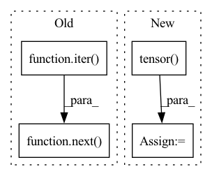

Pattern ID :27674

Before Change
net = DummyModule()
_, targets, _ = next(iter(net.train_dataloader()))
preds = torch.ones_like(targets, dtype=torch.float) * 0.1
pl_map = AveragePrecision()(preds, targets)
After Change
x = torch.relu(self.lin(x))
return x
targets = torch.tensor(
[[0, 1], [0, 1], [0, 1], [0, 1], [1, 0], [1, 0], [1, 0], [1, 0]]
)
preds = torch.tensor([[0.1, 0.9] for _ in range(8)]).clone()
pl_map = AveragePrecision(num_classes=2)(preds, targets)
In pattern: SUPERPATTERN
Frequency: 3
Non-data size: 4
Instances
Fragment ID: 82101924
Project Name: lukashedegaard/ride
Commit Name: f5999d37b0145bccece1fc62606cf85d9f69cdf9
Time: 2021-05-17
Author: lukasxhedegaard@gmail.com
File Name: tests/test_metrics.py
M Class Name: AnonimousClass
N Class Name: AnonimousClass
M Method Name: test_MeanAveragePrecisionMetric(0)
N Method Name: test_MeanAveragePrecisionMetric(0)
M Parent Class:
N Parent Class:
M File Name: tests/test_metrics.py
N File Name: tests/test_metrics.py
M Start Line: 39
M End Line: 44
N Start Line: 42
N End Line: 49
'>
Before Change
poison_y = self.target_class * torch.ones_like(other_y)
trainset = self.dataset.get_dataset(mode="train")
clean_x, clean_y = next(iter(self.dataset.get_dataloader(mode="train", dataset=trainset, batch_size=len(trainset),
shuffle=True, num_workers=0, pin_memory=False)))
discrim_x = torch.cat((other_x, poison_x))
discrim_y = torch.cat((torch.zeros_like(other_y),
torch.ones_like(poison_y)))
After Change
trainset = self.dataset.get_dataset(mode="train")
clean_x, clean_y = zip(*trainset)
clean_x = torch.stack(clean_x)
clean_y = torch.tensor(clean_y)
discrim_x = torch.cat((other_x, poison_x))
discrim_y = torch.cat((torch.zeros_like(other_y),
torch.ones_like(poison_y)))
'>
Fragment ID: 82101925
Project Name: ain-soph/trojanzoo
Commit Name: 2d256dfbc3fd7d58cdc878fbfecf9109c0201f9a
Time: 2020-12-14
Author: ain-soph@live.com
File Name: trojanzoo/attacks/backdoor/bypass_embed.py
M Class Name: Bypass_Embed
N Class Name: Bypass_Embed
M Method Name: sample_data(1)
N Method Name: sample_data(1)
M Parent Class: BadNet
N Parent Class: BadNet
M File Name: trojanzoo/attacks/backdoor/bypass_embed.py
N File Name: trojanzoo/attacks/backdoor/bypass_embed.py
M Start Line: 65
M End Line: 66
N Start Line: 64
N End Line: 67
'>
Before Change
subset, _ = self.dataset.split_set(dataset, percent=self.sample_ratio)
clean_loader = self.dataset.get_dataloader(mode="train", dataset=subset)
_input, _label = next(iter(DataLoader(subset, batch_size=len(subset), num_workers=0)))
poison_input = self.attack.add_mark(_input)
newset = TensorDataset(poison_input, _label)
backdoor_loader = self.dataset.get_dataloader(mode="train", dataset=newset)
After Change
_input, _label = zip(*subset)
_input = torch.stack(_input)
_label = torch.tensor(_label)
poison_input = self.attack.add_mark(_input)
newset = TensorDataset(poison_input, _label)
backdoor_loader = self.dataset.get_dataloader(mode="train", dataset=newset)
'>
Fragment ID: 82101926
Project Name: ain-soph/trojanzoo
Commit Name: 2d256dfbc3fd7d58cdc878fbfecf9109c0201f9a
Time: 2020-12-14
Author: ain-soph@live.com
File Name: trojanzoo/defenses/backdoor/neuron_inspect.py
M Class Name: Neuron_Inspect
N Class Name: Neuron_Inspect
M Method Name: get_explation_feature(1)
N Method Name: get_explation_feature(1)
M Parent Class: BackdoorDefense
N Parent Class: BackdoorDefense
M File Name: trojanzoo/defenses/backdoor/neuron_inspect.py
N File Name: trojanzoo/defenses/backdoor/neuron_inspect.py
M Start Line: 64
M End Line: 64
N Start Line: 64
N End Line: 66